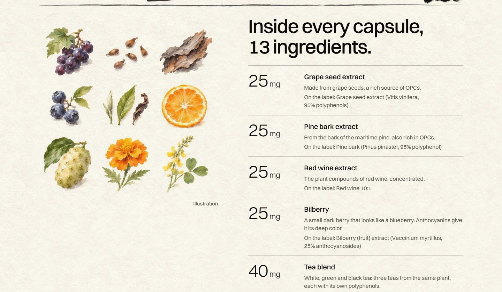
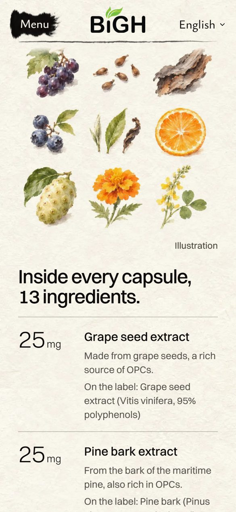
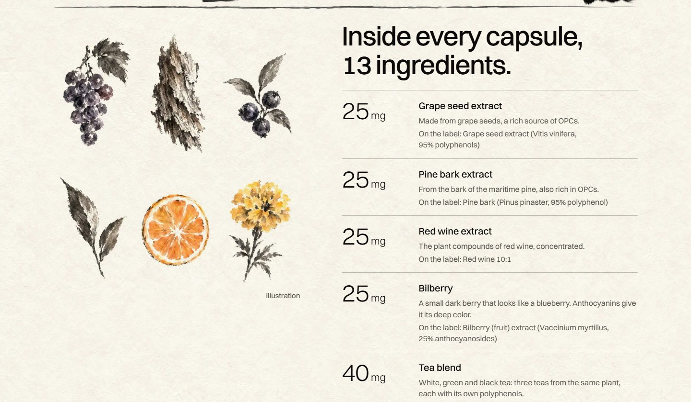
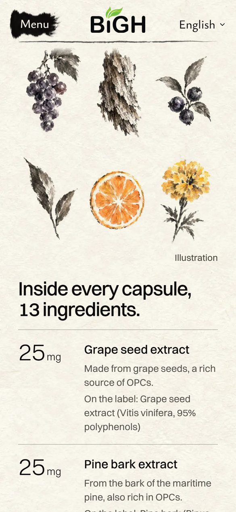
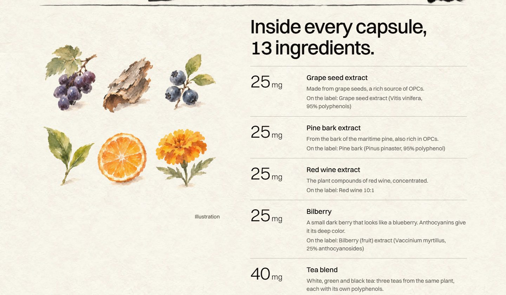
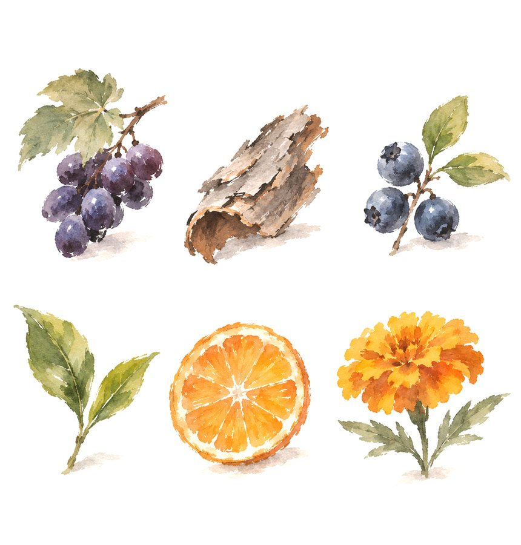
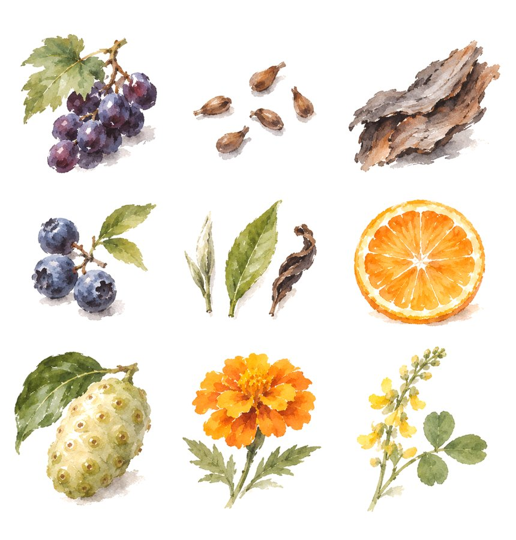
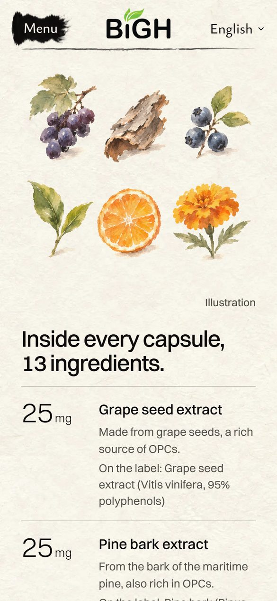
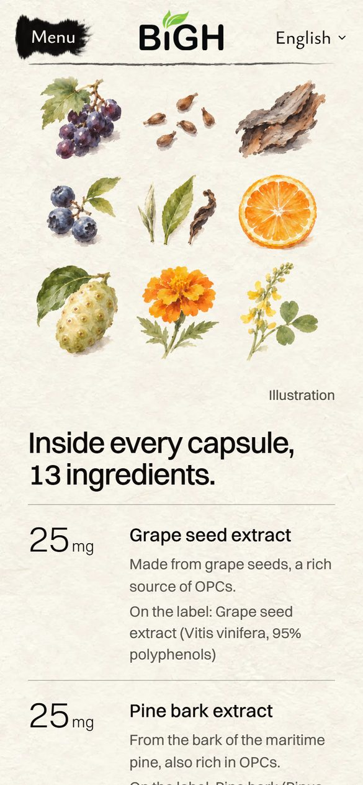

<title>OPC Plants Chapter</title>
<meta name="claude:viewport-fit-sides" content="cover">
<link rel="preconnect" href="https://fonts.googleapis.com">
<link rel="preconnect" href="https://fonts.gstatic.com" crossorigin>
<link rel="stylesheet" href="https://fonts.googleapis.com/css2?family=Ysabeau:wght@500;600&family=Inter:wght@400;500;600&display=swap">
<style>
  /* One column of rice paper, like the site: the chapter now, then each idea on the live page and
     its painting up close. A single light look on purpose (paintings on the site's own paper). */
  :root {
    --paper: #f3efe6;
    --ink: #1b1915;
    --muted: #5c564c;
    --line: #d8d1c3;
    --pick: #6b4a7a;
    --display: "Ysabeau", "Iowan Old Style", Georgia, serif;
    --body: "Inter", system-ui, -apple-system, "Segoe UI", sans-serif;
    color-scheme: light;
  }
  body {
    background: var(--paper);
    color: var(--ink);
    font-family: var(--body);
    font-size: 17px;
    line-height: 1.55;
    padding-left: max(16px, env(safe-area-inset-left, 0px));
    padding-right: max(16px, env(safe-area-inset-right, 0px));
    padding-block: 28px 64px;
  }
  main { max-width: 1080px; margin: 0 auto; display: grid; gap: 48px; }
  h1, h2 { font-family: var(--display); font-weight: 600; line-height: 1.08; text-wrap: balance; margin: 0; }
  h1 { font-size: clamp(34px, 6vw, 56px); }
  h2 { font-size: clamp(24px, 3.2vw, 32px); }
  p { margin: 0; max-width: 62ch; }
  ul { margin: 0; padding-left: 1.2em; display: grid; gap: 4px; max-width: 62ch; }
  .lead { font-size: 19px; }
  .muted { color: var(--muted); font-size: 15px; }
  header { display: grid; gap: 14px; }
  section { display: grid; gap: 14px; padding-top: 24px; border-top: 1px solid var(--line); }
  .pick { color: var(--pick); font-weight: 600; font-size: 15px; letter-spacing: 0.02em; }
  .row { display: grid; grid-template-columns: minmax(0, 2fr) minmax(0, 1fr); gap: 12px; align-items: start; }
  .phones { display: grid; grid-template-columns: repeat(2, minmax(0, 260px)); gap: 12px; }
  figure { margin: 0; display: grid; gap: 6px; min-width: 0; align-content: start; }
  figure img { width: 100%; height: auto; display: block; border: 1px solid var(--line); border-radius: 6px; background: #fff; }
  figcaption { font-size: 14px; color: var(--muted); }
  .reply { padding: 18px 20px; border: 1.5px solid var(--ink); border-radius: 12px; display: grid; gap: 8px; }
  @media (max-width: 640px) { .row { grid-template-columns: minmax(0, 1fr); } }
</style>

<main>
  <header>
    <p class="muted">BiGH website · Advanced OPC Formula, part 6 · November 17, 2026</p>
    <h1>The plants chapter</h1>
    <p class="lead">“Inside every capsule, 13 ingredients.” comes right after the grapes. Its painting is still mostly grey ink, painted as an Asian ink study. Two new paintings in the grapes’ California color. The words and the list stay the same.</p>
  </header>

  <section aria-labelledby="built">
    <p class="pick">You picked B · built, not live yet</p>
    <h2 id="built">B as built</h2>
    <p>All nine plants, on the built site. The words and the list are unchanged.</p>
    <div class="row">
      <figure><figcaption>Computer</figcaption></figure>
      <figure><figcaption>Phone</figcaption></figure>
    </div>
  </section>

  <section aria-labelledby="now">
    <h2 id="now">Now (live)</h2>
    <p>Six plants, mostly grey ink, with a little orange and yellow.</p>
    <div class="row">
      <figure><figcaption>Computer</figcaption></figure>
      <figure><figcaption>Phone</figcaption></figure>
    </div>
  </section>

  <section aria-labelledby="a">
    <h2 id="a">A · The same six, in color</h2>
    <ul>
      <li><strong>What you see:</strong> grapes, pine bark, bilberries, tea, an orange slice, a marigold.</li>
      <li><strong>What changes:</strong> only the paint. Same six plants, same calm rows.</li>
    </ul>
    <div class="row">
      <figure><figcaption>Computer</figcaption></figure>
      <figure><figcaption>The painting</figcaption></figure>
    </div>
  </section>

  <section aria-labelledby="b">
    <p class="pick">Claude’s pick</p>
    <h2 id="b">B · All nine plants</h2>
    <ul>
      <li><strong>What you see:</strong> every plant source in the formula, three rows of three.</li>
      <li><strong>New ones:</strong> grape seeds, noni fruit, sweet clover, and the three teas (white, green, black).</li>
      <li><strong>Why it’s my pick:</strong> the page says “Nine plant extracts”. Now the picture shows all nine.</li>
    </ul>
    <div class="row">
      <figure><figcaption>Computer</figcaption></figure>
      <figure><figcaption>The painting</figcaption></figure>
    </div>
    <div class="phones">
      <figure><figcaption>A on a phone</figcaption></figure>
      <figure><figcaption>B on a phone</figcaption></figure>
    </div>
    <p class="muted">What holds B back: each plant is small on a computer (about a thumb’s width), and the noni fruit is bumpy and spotted, as real noni is. It reads clearly next to its name in the list.</p>
  </section>

  <section class="reply" aria-labelledby="reply">
    <h2 id="reply">Your call</h2>
    <p>You picked <strong>B</strong>. Reply <strong>yes</strong> to put it live, or tell me what to change.</p>
  </section>
</main>
